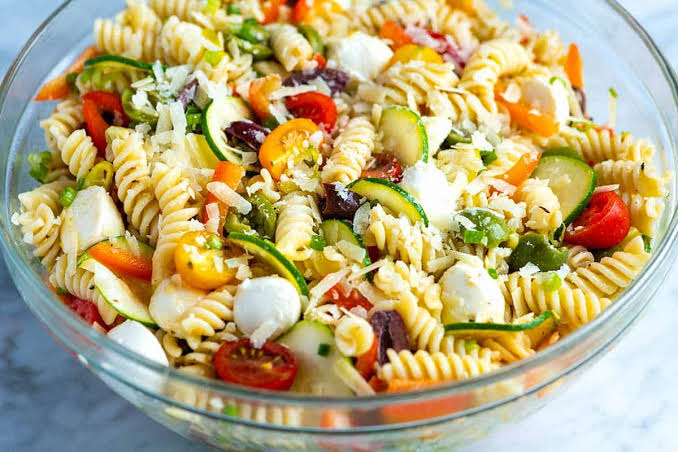

Pasta Salad Recipe

Description
Pasta Salad is a refreshing and versatile dish that's perfect for picnics, potlucks, or a side dish for any meal. This colorful salad features cooked pasta tossed with crisp vegetables, tangy vanaigrette dressing and flavorful herbs. It's a light and satisfying option that can be customized with your favorite ingredients, making it a hit at any gathering or as a quick and easy meal option.
Ingredients
- Pasta (such as fusilli or penne)
- Cherry tomatoes, halved
- Cucumber, diced
- Bell peppers (red, yello w or green), diced
- Red onion, thinly sliced
- Black olives, sliced
- Feta cheese, crumbled
- Fresh basil leaves, chopped
- Italian parsley, chopped
- Vanaigrette Dressing:
- Olive oil
- Red wine
- Dijon mustard
- Garlic, minced
- Salt and pepper to taste
Steps
- Cook the pasta according to the package instructions unitil al dente. Drain and rinse under cold water to stop the cooking process. Set aside to cool
- In a large mixing bowl, combine the cooked pasta, cherry tomatoes,cucumber,bell pepper, red onion, black olives, feta cheese, chopped basil, and parsley.
- In a small bowl, whisk together the olive oil , red wine vinegar, Dijon mustard, minced garlic and pepper to male the vinaigrette dressing.
- Pour the vinaigrette dressing over the pasta salad and toss until everything is evenly coated.
- Taste and adjust the seasoning, if necesssary
- Cover the bowl with plastic wrap and refrigerate for at least 1 hour to allow the flavors to meld together.
- Before serving, givebthe pasta salad a final toss and garnish with additional chopped herbs, if desired. Serve chilled and enjoy!